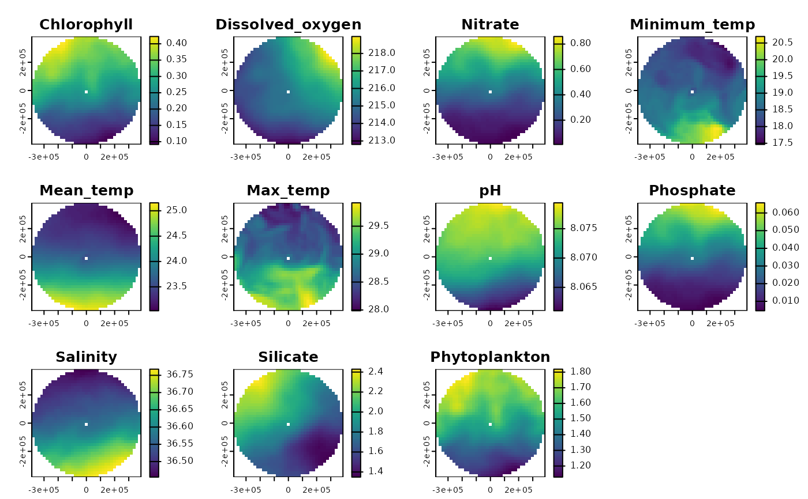
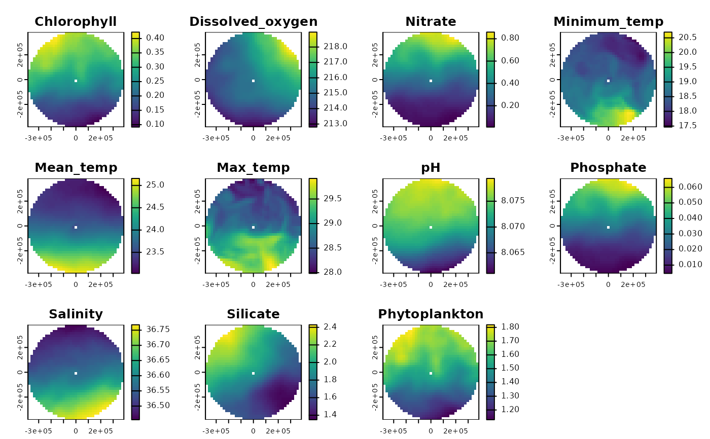

Create environmental regions for area of interest
get_enviro_regions.RdThis function gets [Bio-Oracle](https://bio-oracle.org/) environmental data for the area of interest or planning grid and creates environmental regions using k-means clustering. The idea for this comes from Magris et al. [2020](https://doi.org/10.1111/ddi.13183). The number of environmental regions can be specified directly, using `num_clusters`, but the function will also find the 'optimal' number of clusters using the `NbClust()` from the `NbClust` package.
Usage
get_enviro_regions(
area_polygon = NULL,
spatial_grid = NULL,
raw_data = FALSE,
show_plots = TRUE,
num_clusters = NULL,
max_num_clusters = 6,
antimeridian = NULL,
sample_size = 5000,
num_samples = 5,
num_cores = 1,
custom_seed = 1234
)Arguments
- area_polygon
an `sf` polygon or multipolygon object of the area of interest (e.g., a country's EEZ)
- spatial_grid
a `terra::rast()` or `sf` planning grid with the desired resolution and coordinate reference system generated by `get_grid()`. For a raster, values in the planning grid cells should be 1, while all other values are NA
- raw_data
`logical`; whether to only return the raw Bio-Oracle environmental data and not proceed to calculating environmental regions (default is FALSE)
- show_plots
`logical`; whether to show boxplots for each environmental variable in each environmental region (default is TRUE)
- num_clusters
`numeric`; the number of environmental regions to cluster the data into - to be used when a clustering algorithm is not necessary (default is NULL)
- max_num_clusters
`numeric`; the maximum number of environmental regions to try when using the clustering algorithm (default is 6)
- antimeridian
Does `area_polygon` or `spatial_grid` span the antimeridian? If so, this should be set to `TRUE`, otherwise set to `FALSE`. If set to `NULL` (default) the function will try to check if data spans the antimeridian and set this appropriately.
- sample_size
`numeric`; default is 5000. Larger sample sizes will quickly consume memory (>10GB) so should be used with caution.
- num_samples
`numeric`; default is 5, which resulted in good consensus on the optimal number of clusters in testing.
- num_cores
`numeric`; default 1. Multi-core sampling is supported if the package `parallel` is installed, but be aware than increasing the number of cores will also increase the memory required.
- custom_seed
`numeric`; default `1234`, but a custom seed can be supplied if desired.
Value
If an `area_polygon` is supplied, a raster stack of environmental regions, or Bio-Oracle data if `raw_data = TRUE`, is returned. If a `spatial_grid` is supplied, a raster stack or `sf` of gridded environmental regions, or Bio-Oracle data if `raw_data = TRUE`, is returned depending on `spatial_grid` format.
Details
The environmental data used in the clustering, obtained from Bio-Oracle are:
Carbon phytoplankton biomass (mean)
Chlorophyll concentration (mean)
Dissolved oxygen concentration (mean)
Nitrate concentration (mean)
pH (mean)
Phosphate concentration (mean)
Primary production (mean)
Sea surface saliinity (mean)
Sea surface temperature (max)
Sea surface temperature (mean)
Sea surface temperature (min)
Silicate concentration (mean)
When the number of planning units/ cells for clustering exceeds ~ 10,000, the amount of computer memory required to find the optimal number of clusters using `NbClust::NbClust()` exceeds 10GB, so repeated sampling is used to find a consensus number of clusters. Sensible defaults are provided, namely `sample_size = 5000`, `num_samples = 5`, `max_num_clusters = 6` but can be customised if desired, though see the parameter descriptions below for some words of warning. Parallel processing is offered by specifying `num_cores` >1 (must be an integer), though the package `parallel` must be installed (it is included in most R installations). To find the number of available cores `parallel::detectCores()`.
Examples
# Get EEZ data first
bermuda_eez <- get_area(area_name = "Bermuda", mregions_column = "territory1")
# Get the Bio-Oracle environmental data in the area of interest
enviro_data <- get_enviro_regions(area_polygon = bermuda_eez, raw_data = TRUE)
# Create three environmental regions for a planning grid
planning_grid <- get_grid(area_polygon = bermuda_eez, projection_crs = '+proj=laea +lon_0=-64.8108333 +lat_0=32.3571917 +datum=WGS84 +units=m +no_defs', resolution = 5000)
enviro_regions <- get_enviro_regions(spatial_grid = planning_grid, num_clusters = 3)
 
